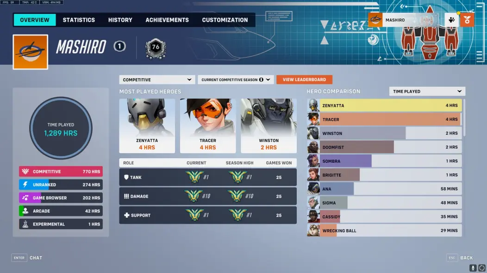
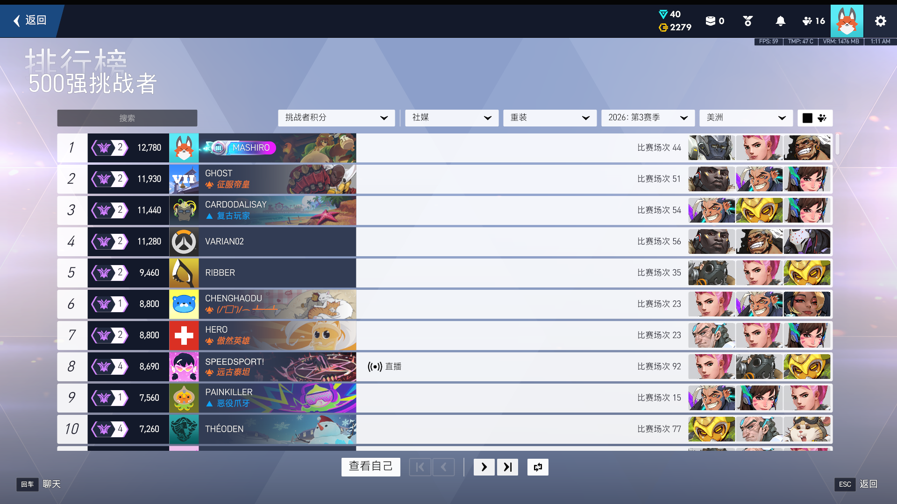

UCI Esports
高校电竞的高光时刻
进入加州大学尔湾分校(UC Irvine)后,我一直效力于 UCI 电竞校队。我们夺得了加州大学电竞联赛(UCEI)冠军;全美最好成绩为第三名——这也是队史最佳排名。


《守望先锋》是我走上游戏设计之路的起点。自 2017 年赴美读高中以来,这款游戏已陪伴我八年。
进入加州大学尔湾分校(UC Irvine)后,我一直效力于 UCI 电竞校队。我们夺得了加州大学电竞联赛(UCEI)冠军;全美最好成绩为第三名——这也是队史最佳排名。


凭借对游戏的投入以及 UCI 电竞的影响力,我们受邀前往暴雪,试玩数张重做中的《守望先锋》地图。我通过 Zoom 向地图设计师提出了建设性反馈——其中一条建议最终被采纳上线:看看二楼的门是如何变得更高、更宽的。


我喜欢用自己的精彩操作片段剪辑集锦和攻略视频,发布在 Bilibili 和 YouTube 上。播放量最高的一支视频达到了 10.4 万次观看。